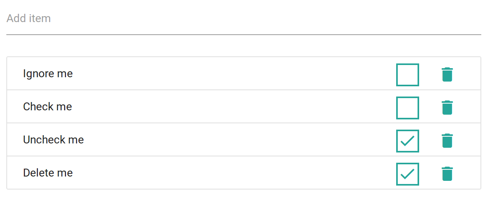

TO-DO list
In this tutorial you will learn to design a basic API to create a list of items. We store them in a MongoDB database using Mongoose and it will be for a single person.
Some possible uses:
- An actual TO-DO list. Some times you just need a simple list.
- The beginning of Hacker News, Reddit, or similar. Those are basically four glorified CRUDs: users, stories, comments, votes.
End product:

Install dependencies
After getting your project ready you'll have to make sure that you have MongoDB installed following the official guide and run it (will depend on your installation process). To check that you have it on Ubuntu do:
mongod --version # Should display a number
mongodThen we install the two libraries that we will be using within our project folder:
npm install server mongoose jestCode organization
Since this is a fairly small project focused on the back-end we will have all our server files within the root folder and won't go into detail for the front-end. The project will have these files:
- public/: the folder for public assets.
- views/: the folder for the only view.
- index.js: the entry point and routers.
- model.js: the definition of the database structure.
- package.json: npm package where the dependencies and some info is.
- test.js: integration tests to make sure everything is working.
- todo.js: interaction with the database and main logic.
You can see the whole working project in the repository:
Github RepositoryREST API
Let's first of all define our API. Let's keep it simple! Within index.js we write:
// index.js
const server = require('server');
const { get, post, put, del } = server.router;
const { render } = server.reply;
const todo = require('./todo.js');
// Render the homepage for `/`
const home = get('/', ctx => render('index.hbs'));
// Add some API endpoints
const api = [
get('/todo', todo.read),
post('/todo', todo.create),
put('/todo/:id', todo.update),
del('/todo/:id', todo.delete)
];
// Launch the server with those
server(home, api);This first loads the needed library and functions, then defines few routes and finally launches the server with those routes. We are using the default settings so no options are needed.
We are using the CRUD operation names, but any of those is fairly common for the method names (just keep them consistent):
- get(): read, retrieve, all, list, select
- post(): create, add, insert
- put(): edit, update, change, modify
- del(): delete, remove, destroy
Database
We are using Mongoose (a layer on top of MongoDB) to implement database access. For this, we first have to create a small model.js where we define how our schema and model data looks like:
// model.js
const mongoose = require('mongoose');
// Configure the Mongoose plugin
mongoose.connect(process.env.MONGODB_URI || 'mongodb://localhost/todo');
// define the Todo schema
const TodoSchema = mongoose.Schema({
text: { type: String, required: true },
done: { type: Boolean, required: true, default: false },
});
module.exports = mongoose.model('Todo', TodoSchema);This way, all of our TODOs will have two fields, the text and a boolean indicating whether or not it's done.
The mongoose configuration MONGODB_URI comes from the environment.
Todos logic
Now, to write this code we create the file todo.js with this code:
// todo.js
const { json } = require('server/reply');
const model = require('./schema');
export.read = async ctx => {};
export.create = async ctx => {};
export.update = async ctx => {};
export.delete = async ctx => {};These are the 4 basic CRUD operations as shown before. This file will export these asynchronous functions, that will take the context argument as with any server.js middleware and whatever they return will be used for the response.
Finally, let's implement the database access logic inside each of these 4 functions:
// todo.js
const { status, json } = require('server/reply');
const Todo = require('./model');
exports.read = async (ctx) => {
return Todo.find().sort('done').lean().exec();
};
exports.create = async (ctx) => {
const item = new Todo({ text: ctx.data.text });
return status(201).json(await item.save());
};
exports.update = async (ctx) => {
const set = { $set: { done: ctx.data.done } };
await Todo.findByIdAndUpdate(ctx.params.id, set).exec();
return Todo.find().sort('done').lean().exec();
};
exports.delete = async (ctx) => {
return Todo.findByIdAndRemove(ctx.params.id).exec();
};Testing
This section describes a future API and **it is not available yet**. Now please use more traditional testing method.
We will be using Jest for testing, but you can use any library or framework that you prefer. We have to make a small change in our main index.js: we export the return value from server():
// ...
module.exports = server(home, api);Then we can import it from the integration tests. Let's create a test.js:
// test.js
const run = require('server/test/run');
const server = require('./index.js');
describe('Homepage', () => {
it('renders the homepage', async () => {
const res = await run(server).get('/');
expect(res.status).toBe(200);
expect(res.body).toMatch(/\<h1\>TODO list<\/h1>/i);
});
});